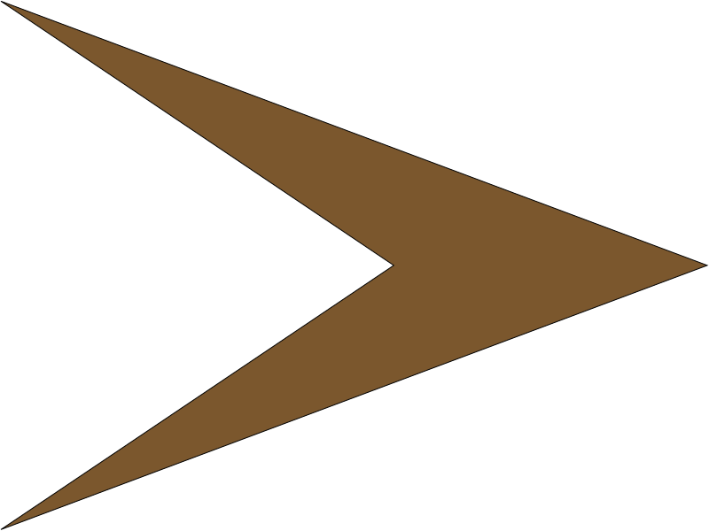

В прошлый раз мы изучали списки, подстановку переменных, комментарии, сравнение и
присвоение, операторы if и while. Я обещал, что в этой части мы изучим модули и
функции. Давайте начнём.
Модули предлагают способ расширить программирование на Python. Вы можете создать
свои модули, использовать те, которые поставляются с Python или которые написали
другие. В самом Python есть сотни модулей, которые облегчают написание программ.
Список модулей, поставляемых с Python, находится по адресу:
http://docs.python.org.
Некоторые модули предназначены для определённых
операционных систем, но большинство из них кроссплатформенные и работают
одинаково на Linux,
Mac и
Microsoft Windows.
Для использования внешнего модуля
необходимо импортировать его в программу. Один из модулей, поставляемых с Python,
называется «random». Он даёт возможность генерировать псевдослучайные числа. Мы
используем этот модуль в нашем первом примере.
#=======================================
# random_example.py
# Module example using the random module
#=======================================
import random
# print 14 random integers
for cntr in range(1,15):
print random.randint(1,10)
Давайте разберём код по строкам. Первые четыре строки — это комментарии, о которых
мы говорили в прошлый раз. Пятая строка говорит Python, что нужно использовать
модуль «random». Мы должны явно указать Python на это.
#silly example
print '%d + %d = %d ' % (1,2,1+2)
print '%d * %d = %d ' % (1,2,1*2)
print '%d - %d = %d ' % (1,2,1-2)
print '\n'
print '%d + %d = %d ' % (1,4,1+4)
print '%d * %d = %d ' % (1,4,1*4)
print '%d - %d = %d ' % (1,4,1-4)
print '\n'
print '%d + %d = %d ' % (10,5,10+5)
print '%d * %d = %d ' % (10,5,10*5)
print '%d - %d = %d ' % (10,5,10-5)
print '\n'
Здесь нужно не только набрать много текста, но и непременно возникнут ошибки как при
написании, так и при внесении изменений. Вместо этого мы создадим функцию, которую
назовём «DoTwo». Она будет каждый раз брать два числа, проводить математические
операции и выводить результат. Начнём с ключевого слова «def», которое сигнализирует
о том, что мы собираемся определить функцию. После слова «def» добавим название
функции и список параметров, если таковые имеются, в круглых скобках. Эту строку
необходимо завершить двоеточием. Код функции набирается с отступом. Наш
улучшенный простой пример (№2) показан ниже.
#silly example 2...still silly, but better
def DoTwo(num1,num2):
print '%d + %d = %d ' % (num1,num2,num1+num2)
print '%d * %d = %d ' % (num1,num2,num1*num2)
print '%d - %d = %d ' % (num1,num2,num1-num2)
print '\n'
DoTwo(1,2)
DoTwo(1,4)
DoTwo(10,5)
Как видите, здесь написано меньше кода — 8 строк вместо 12. Если нам нужно будет что
либо поменять в функции, мы сможем сделать это, не создавая проблем для нашей
программы. Чтобы вызвать функцию, нужно написать её имя и параметры.
|
|
|
|
|
 |